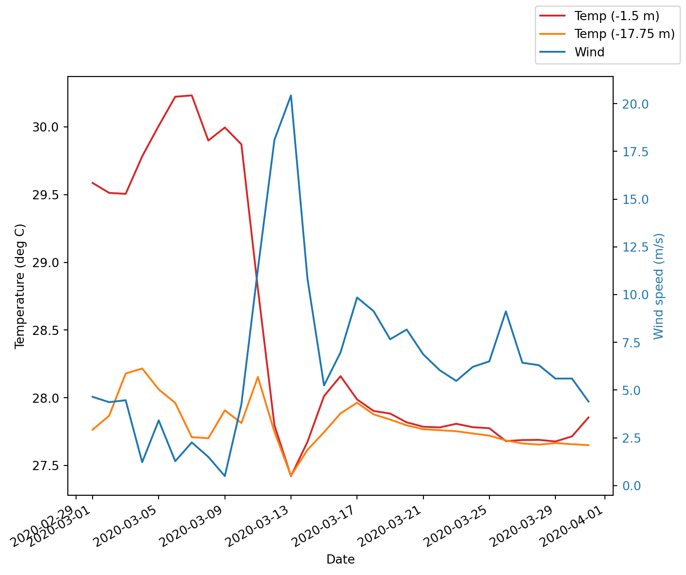

from netCDF4 import Dataset, num2date
import matplotlib.pyplot as plt
import cartopy
import cartopy.crs as ccrs
import os
import datetime
import pandas as pd
import numpy as np
cartopy.config['data_dir'] = os.getenv('CARTOPY_DIR', cartopy.config.get('data_dir'))Plotting eReefs data
Times series plots
Learn how to create time series plots of eReefs data in python.
In this notebook we use OpeNDAP to extract time series data at a single location of interest, then plot this data. This extraction process can also be done with the AIMS eReefs data extraction tool. If you which to perform bigger extractions then we recommend using this tool instead of this process outlined in this example.
Note: This script has no error checking and so changing the date ranges or locations might result in out of bounds errors.
Load the required Python libraries
Choose OPeNDAP end point
The first part of the process is to choose the OPeNDAP end point on the AIMS eReefs THREDD server. You can view the products here. At this stage there is no grouped OPeNDAP service for the entire time series and so this script only works for looking at a single month of data. Hopefully this can be improved in the future.
# Connect to the OpeNDAP endpoint for the specified month.
month = 3
year = 2020
netCDF_datestr = str(year)+'-'+format(month, '02')
netCDF_datestr'2020-03'# OPeNDAP URL to file "EREEFS_AIMS-CSIRO_gbr4_v2_hydro_daily-monthly-YYYY-MM.nc". Hydrodynamic 4km model, daily data for the month specified
inputFile = "http://thredds.ereefs.aims.gov.au/thredds/dodsC/s3://aims-ereefs-public-prod/derived/ncaggregate/ereefs/gbr4_v2/daily-monthly/EREEFS_AIMS-CSIRO_gbr4_v2_hydro_daily-monthly-"+netCDF_datestr+".nc"
nc_data = Dataset(inputFile, 'r')
print(nc_data.title)
# To find a list of the variables uncomment the next line:
nc_data.variableseReefs AIMS-CSIRO GBR4 Hydrodynamic v2 daily aggregation{'mean_cur': <class 'netCDF4._netCDF4.Variable'>
float32 mean_cur(time, k, latitude, longitude)
coordinates: time zc latitude longitude
substanceOrTaxon_id: http://environment.data.gov.au/def/feature/ocean_current
units: ms-1
puv__parameter: http://vocab.nerc.ac.uk/collection/P01/current/LCEWMP01/
medium_id: http://environment.data.gov.au/def/feature/ocean
unit_id: http://qudt.org/vocab/unit#MeterPerSecond
short_name: mean_cur
aggregation: mean_speed
standard_name: mean_current_speed
long_name: mean_current_speed
_ChunkSizes: [ 1 1 133 491]
unlimited dimensions: time
current shape = (31, 17, 723, 491)
filling off,
'salt': <class 'netCDF4._netCDF4.Variable'>
float32 salt(time, k, latitude, longitude)
qudt__unit: http://qudt.org/vocab/unit/PSU
puv__parameter: http://vocab.nerc.ac.uk/collection/P01/current/PSLTMP01/
coordinates: time zc latitude longitude
substanceOrTaxon_id: http://sweet.jpl.nasa.gov/2.2/matrWater.owl#SaltWater
scaledQuantityKind_id: http://environment.data.gov.au/def/property/practical_salinity
short_name: salt
aggregation: Daily
units: PSU
medium_id: http://environment.data.gov.au/def/feature/ocean
unit_id: http://environment.data.gov.au/water/quality/def/unit/PSU
long_name: Salinity
_ChunkSizes: [ 1 1 133 491]
unlimited dimensions: time
current shape = (31, 17, 723, 491)
filling off,
'temp': <class 'netCDF4._netCDF4.Variable'>
float32 temp(time, k, latitude, longitude)
puv__parameter: https://vocab.nerc.ac.uk/collection/P01/current/TEMPMP01/
coordinates: time zc latitude longitude
substanceOrTaxon_id: http://sweet.jpl.nasa.gov/2.2/matrWater.owl#SaltWater
scaledQuantityKind_id: http://environment.data.gov.au/def/property/sea_water_temperature
short_name: temp
aggregation: Daily
units: degrees C
medium_id: http://environment.data.gov.au/def/feature/ocean
unit_id: http://qudt.org/vocab/unit#DegreeCelsius
long_name: Temperature
_ChunkSizes: [ 1 1 133 491]
unlimited dimensions: time
current shape = (31, 17, 723, 491)
filling off,
'u': <class 'netCDF4._netCDF4.Variable'>
float32 u(time, k, latitude, longitude)
vector_components: u v
coordinates: time zc latitude longitude
substanceOrTaxon_id: http://environment.data.gov.au/def/feature/ocean_current
vector_name: Currents
aggregation: Daily
units: ms-1
long_name: Eastward current
puv__parameter: http://vocab.nerc.ac.uk/collection/P01/current/LCEWMP01/
scaledQuantityKind_id: http://environment.data.gov.au/def/property/sea_water_velocity_eastward
short_name: u
standard_name: eastward_sea_water_velocity
medium_id: http://environment.data.gov.au/def/feature/ocean
unit_id: http://qudt.org/vocab/unit#MeterPerSecond
_ChunkSizes: [ 1 1 133 491]
unlimited dimensions: time
current shape = (31, 17, 723, 491)
filling off,
'v': <class 'netCDF4._netCDF4.Variable'>
float32 v(time, k, latitude, longitude)
vector_components: u v
coordinates: time zc latitude longitude
substanceOrTaxon_id: http://environment.data.gov.au/def/feature/ocean_current
vector_name: Currents
aggregation: Daily
units: ms-1
long_name: Northward current
puv__parameter: http://vocab.nerc.ac.uk/collection/P01/current/LCNSMP01/
scaledQuantityKind_id: http://environment.data.gov.au/def/property/sea_water_velocity_northward
short_name: v
standard_name: northward_sea_water_velocity
medium_id: http://environment.data.gov.au/def/feature/ocean
unit_id: http://qudt.org/vocab/unit#MeterPerSecond
_ChunkSizes: [ 1 1 133 491]
unlimited dimensions: time
current shape = (31, 17, 723, 491)
filling off,
'zc': <class 'netCDF4._netCDF4.Variable'>
float64 zc(k)
positive: up
coordinate_type: Z
units: m
long_name: Z coordinate
axis: Z
_CoordinateAxisType: Height
_CoordinateZisPositive: up
unlimited dimensions:
current shape = (17,)
filling off,
'time': <class 'netCDF4._netCDF4.Variable'>
float64 time(time)
units: days since 1990-01-01 00:00:00 +10
long_name: Time
standard_name: time
coordinate_type: time
puv__uom: http://vocab.nerc.ac.uk/collection/P06/current/UTAA/
calendar: gregorian
_CoordinateAxisType: Time
_ChunkSizes: 1024
unlimited dimensions: time
current shape = (31,)
filling off,
'latitude': <class 'netCDF4._netCDF4.Variable'>
float64 latitude(latitude)
long_name: Latitude
standard_name: latitude
units: degrees_north
coordinate_type: latitude
projection: geographic
puv__ofProperty: http://vocab.nerc.ac.uk/collection/S06/current/S0600045/
puv__uom: http://vocab.nerc.ac.uk/collection/P06/current/DEGN/
_CoordinateAxisType: Lat
unlimited dimensions:
current shape = (723,)
filling off,
'longitude': <class 'netCDF4._netCDF4.Variable'>
float64 longitude(longitude)
standard_name: longitude
long_name: Longitude
units: degrees_east
puv__uom: http://vocab.nerc.ac.uk/collection/P06/current/DEGE/
coordinate_type: longitude
projection: geographic
_CoordinateAxisType: Lon
unlimited dimensions:
current shape = (491,)
filling off,
'mean_wspeed': <class 'netCDF4._netCDF4.Variable'>
float32 mean_wspeed(time, latitude, longitude)
puv__parameter: http://vocab.nerc.ac.uk/collection/P01/current/ESEWMPXX/
coordinates: time latitude longitude
units: ms-1
short_name: mean_wspeed
aggregation: mean_speed
standard_name: mean_wind_speed
long_name: mean_wind_speed
_ChunkSizes: [ 1 133 491]
unlimited dimensions: time
current shape = (31, 723, 491)
filling off,
'eta': <class 'netCDF4._netCDF4.Variable'>
float32 eta(time, latitude, longitude)
puv__parameter: https://vocab.nerc.ac.uk/collection/P01/current/ASLVMP01/
coordinates: time latitude longitude
substanceOrTaxon_id: http://environment.data.gov.au/def/feature/ocean_near_surface
scaledQuantityKind_id: http://environment.data.gov.au/def/property/sea_surface_elevation
short_name: eta
standard_name: sea_surface_height_above_sea_level
aggregation: Daily
units: metre
positive: up
medium_id: http://environment.data.gov.au/def/feature/ocean
unit_id: http://qudt.org/vocab/unit#Meter
long_name: Surface elevation
_ChunkSizes: [ 1 133 491]
unlimited dimensions: time
current shape = (31, 723, 491)
filling off,
'wspeed_u': <class 'netCDF4._netCDF4.Variable'>
float32 wspeed_u(time, latitude, longitude)
puv__parameter: http://vocab.nerc.ac.uk/collection/P01/current/ESEWMPXX/
coordinates: time latitude longitude
short_name: wspeed_u
aggregation: Daily
units: ms-1
long_name: eastward_wind
_ChunkSizes: [ 1 133 491]
unlimited dimensions: time
current shape = (31, 723, 491)
filling off,
'wspeed_v': <class 'netCDF4._netCDF4.Variable'>
float32 wspeed_v(time, latitude, longitude)
puv__parameter: http://vocab.nerc.ac.uk/collection/P01/current/ESNSMPXX/
coordinates: time latitude longitude
short_name: wspeed_v
aggregation: Daily
units: ms-1
long_name: northward_wind
_ChunkSizes: [ 1 133 491]
unlimited dimensions: time
current shape = (31, 723, 491)
filling off}Select the point location
Work out the bounds of the gridded data. We can then use this to find out which grid cell best matches our location of interest.
Note: This only works because the AIMS eReefs aggregate datasets are regridded onto a regularly spaced grid. The original raw model data is on a curvilinear grid and this approach would not work for that data.
lons = nc_data.variables['longitude'][:]
max_lon = max(lons)
min_lon = min(lons)
lats = nc_data.variables['latitude'][:]
max_lat = max(lats)
min_lat = min(lats)
grid_lon = lons.size
grid_lat = lats.size
print("Grid bounds, Lon: "+str(min_lon)+" - "+str(max_lon)+" Lat:"+str(min_lat)+" - "+str(max_lat))
print("Grid size is: "+str(grid_lon)+" x "+str(grid_lat))Grid bounds, Lon: 142.168788 - 156.868788 Lat:-28.696022 - -7.036022
Grid size is: 491 x 723Find the closest index to the location of interest.
# Davies reef
lat = -18.82
lon = 147.64
selectedLatIndex = round((lat-min_lat)/(max_lat-min_lat)*grid_lat)
selectedLonIndex = round((lon-min_lon)/(max_lon-min_lon)*grid_lon)
print("Grid position of location: "+str(selectedLatIndex)+", "+str(selectedLonIndex))Grid position of location: 330, 183Extract values
Extract the values over time at this location. Note that because we are access the underlying data here this results in an OpeNDAP call to get the data from the remote server. As a result this call can take a while (~10 sec).
selectedDepthIndex = 15 # -1.5m
selectedDepthIndex2 = 10 # -17.75m
# Time, Depth, Lat, Lon
dailyTemp1 = nc_data.variables['temp'][:,[selectedDepthIndex,selectedDepthIndex2], selectedLatIndex, selectedLonIndex]
print(dailyTemp1[0:5])[[29.586527 27.764503]
[29.513176 27.867159]
[29.505758 28.179167]
[29.782936 28.216429]
[30.008278 28.062304]]Let’s get the wind for the same location. The wind variable doesn’t have any depth dimension and so our indexing into the data is different. The wind is a vector measurement, with an x and y component.
wspeed_v = nc_data.variables['wspeed_v'][:, selectedLatIndex, selectedLonIndex]
wspeed_u = nc_data.variables['wspeed_v'][:, selectedLatIndex, selectedLonIndex]To get the wind speed we need to calculate the magnitude of this vector.
wspeed = np.sqrt(wspeed_v**2 + wspeed_u**2)Get the time series. Note that the time values are stored as the number of days since 1990-01-01 00:00:00 +10.
times = nc_data.variables['time'][:]
print(times[0:5])[11017. 11018. 11019. 11020. 11021.]Plot the time series
# Convert the days since the 1990 origin into Pandas dates for plotting
t = pd.to_datetime(times,unit='D',origin=pd.Timestamp('1990-01-01'))
fig, ax1 = plt.subplots()
fig.set_size_inches(8, 7)
ax1.set_xlabel('Date')
ax1.set_ylabel('Temperature (deg C)')
ax1.plot(t, dailyTemp1[:,0], color='tab:red', label='Temp (-1.5 m)')
ax1.plot(t, dailyTemp1[:,1], color='tab:orange', label='Temp (-17.75 m)')
#ax1.tick_params(axis='y', labelcolor=color)
ax2 = ax1.twinx() # instantiate a second axes that shares the same x-axis
color = 'tab:blue'
ax2.set_ylabel('Wind speed (m/s)', color=color) # we already handled the x-label with ax1
ax2.plot(t, wspeed, color=color, label='Wind')
ax2.tick_params(axis='y', labelcolor=color)
fig.legend()
# Set the axes formating to show the dates on an angle on the current figure (gcf)
plt.gcf().autofmt_xdate()
#fig.tight_layout() # otherwise the right y-label is slightly clipped
From this graph we can see that the surface water at Davies Reef was very warm during March 2020. There was a strong stratification of the temperature profile with cool water at -18 m. Around the 10th March the wind picked up for a few days, mixing the water, cooling the surface down rapidly.